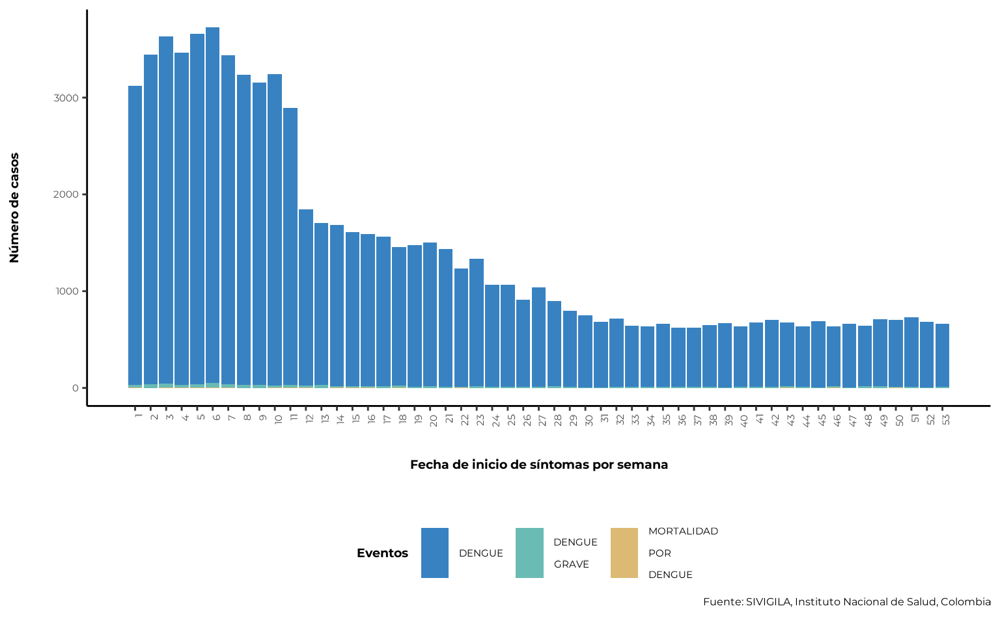
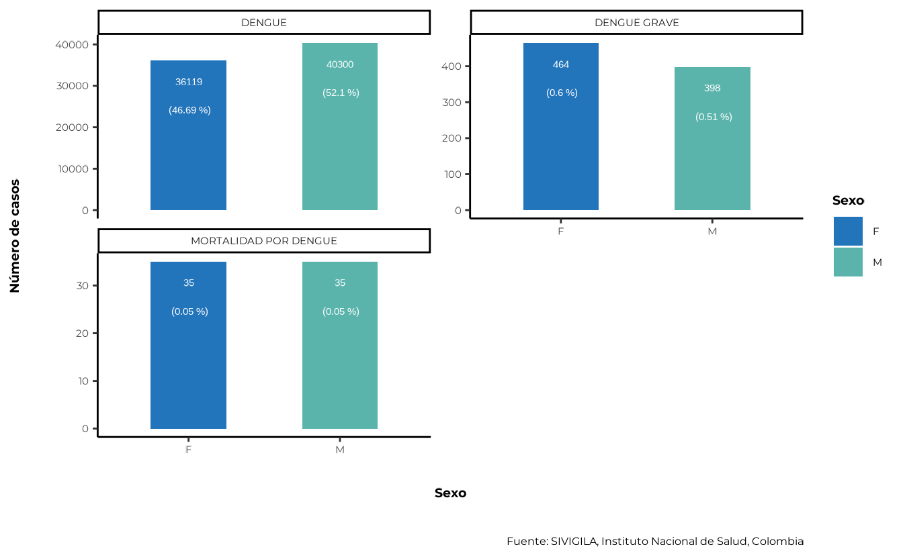
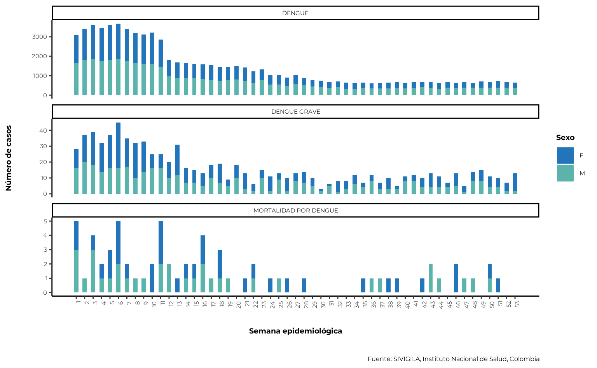
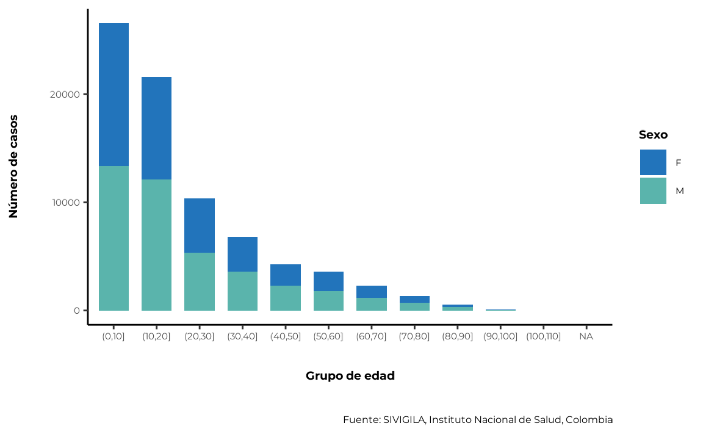
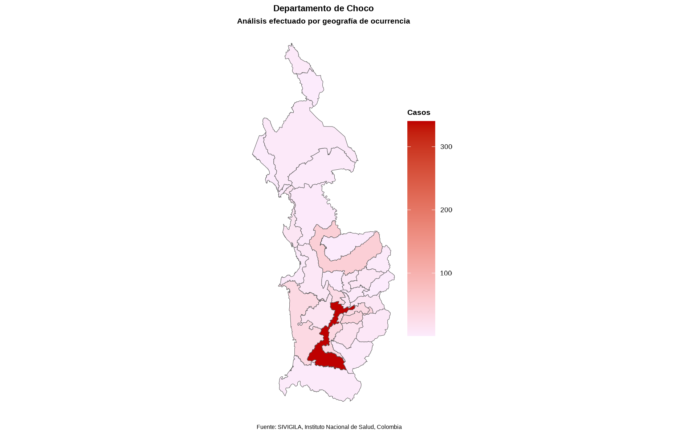

Below is a basic set of instructions for using sivirep
if:
- You have already produced an .Rmd file and wish to edit a report.
- You wish to perform customized analyses without an .Rmd file.
1. Importing Data from SIVIGILA
The SIVIGILA source provides historical case list data up to the last closed epidemiological year. For most diseases, the closing usually happens in April of the following year.
You can check the available diseases and years using:
event_list <- list_events()Once you have decided on the disease and year, use
import_data_event to import data from SIVIGILA using a
parameterized format based on disease and year:
data_event <- import_data_event(
year = 2020,
nombre_event = "Dengue",
cache = TRUE
)💡 Tip: Avoid delays when importing data by setting
cache = TRUE.
2. Cleaning SIVIGILA Data
SIVIGILA data is a highly reliable official information source, with ISO certification for data quality. However, there may sometimes be outliers in the data that require additional cleaning.
sivirep provides a generic function called
limpiar_data_sivigila that encompasses various tasks to
identify and correct errors, inconsistencies, and discrepancies in
datasets in order to improve their quality and accuracy. This process
may include the removal of duplicates, correction of typographical
errors, replacement of missing values, and data validation, among other
tasks such as eliminating improbable dates, cleaning geolocation codes,
and standardizing column names and age categories.
data_event <- limpiar_data_sivigila(data_event = data_event)The cleaning functions within limpiar_data_sivigila have
been compiled and created based on the experience of field
epidemiologists. These may include internal functions such as:
limpiar_encabezado: a function that cleans and standardizes column names in SIVIGILA case list data based on the SIVIGILA data dictionary.limpiar_edad_event: a function that cleans the ages in SIVIGILA case list data.limpiar_fecha_event: a function that cleans the dates in disease data.
The user can use these functions individually or simply use the
generic wrapper function limpiar_data_sivigila.
3. Filtering Cases
sivirep provides a function that allows filtering
disease data by department or municipality name called
geo_filtro. This enables the user to create a
subnational-level report by selecting specific cases based on geographic
location.
filtered_data_event <- geo_filtro(
data_event = data_event,
dpto = "Choco"
)4. Temporal Distribution of Cases
In sivirep, the temporal distribution of cases is
defined by the variables “symptom onset date” and “notification date.”
For each of these variables, there are specialized functions to group
the data and generate graphs.
4.1. Grouping by Symptom Onset Date
To generate the distribution of cases by symptom onset date, it is
necessary to group the data by these variables. sivirep
provides a function that allows this grouping called
agrupar_fecha_inisintomas.
cases_ini_symptoms <- agrupar_fecha_inisintomas(
data_event =
data_event
)💡 Tip: Get the top n months with the most cases
When building a section of the report or analyzing these data, it may be helpful to find the months with the most cases. In
sivirep, you can use the functionobtener_meses_mas_casosto obtain this information.
The graph to visualize this distribution should be generated with the
plot_fecha_inisintomas function. Keep in mind that even if
you have grouped the data by day, you might prefer to represent it by
epidemiological week, as follows:
plot_fecha_inisintomas(
data_agrupada = cases_ini_symptoms,
uni_marca = "semanaepi"
)
5. Age and Sex Analysis
5.1. Sex Variable
When analyzing or reporting disease data, it is often necessary to determine the distribution of cases by gender or sex. However, the SIVIGILA source only records sex.
sivirep provides a function that automatically
aggregates and calculates percentages by sex after the cleaning
process.
cases_sex <- agrupar_sex(
data_event = data_event,
porcentaje = TRUE
)Additionally, sivirep includes a function to generate
the graph for this variable called plot_sex:
plot_sex(data_agrupada = cases_sex)
The distribution of cases by sex and epidemiological week can be
generated using the function agrupar_sex_semanaepi provided
by sivirep.
cases_sex_week_epi <- agrupar_sex_semanaepi(data_event = data_event)The corresponding visualization function is
plot_sex_semanaepi, which sivirep provides to
show the distribution of cases by sex and epidemiological week.
plot_sex_semanaepi(data_agrupada = cases_sex_week_epi)
5.2. Age Variable
Age is an important variable to analyze, as it is a known risk factor for many diseases. Certain diseases and conditions tend to occur more frequently in specific age groups, and this distribution can help identify populations at higher risk and implement targeted prevention and control strategies.
sivirep provides a function called
agrupar_edad, which can group disease data by age groups.
By default, this function produces age ranges in 10-year intervals.
Additionally, users can customize a different age range.
cases_age <- agrupar_edad(data_event = data_event, interval_edad = 10)The corresponding visualization function is
plot_edad.
plot_edad(data_agrupada = cases_age)
5.3. Age and Sex Together
sivirep proporciona una función llamada
agrupar_edad_sex, que puede agrupar los datos de
enfermedades por rangos de edad y sexo de forma simultánea y obtener el
número de casos y los porcentajes correspondientes. Además, permite
personalizar el intervalo de edad.
cases_age_sex <- agrupar_edad_sex(
data_event = data_event,
interval_edad = 10
)La función de visualización correspondiente es
plot_edad_sex.
plot_edad_sex(data_agrupada = cases_age_sex)
6. Spatial Distribution of Cases
Obtaining the spatial distribution of cases is useful for identifying areas with a high concentration of cases, disease clusters, and environmental or social risk factors.
In Colombia, there are 32 administrative geographic units (adm1)
called departments. sivirep provides a function called
agrupar_mpio that allows obtaining a data.frame of cases
grouped by department or municipality.
dist_esp_dept <- agrupar_mpio(
data_event = filtered_data_event,
dpto = "Choco"
)Currently, with the function called plot_map, the user
can generate a static map of Colombia showing the distribution of cases
by departments and municipalities.
mapa
💡 Tip: Obtain the row with the highest number of cases
When building a section of the report or analyzing these data, it may be useful to know which variable has the most cases. In
sivirep, you can use the functionobtener_fila_mas_casosto get this information. This function works with any dataset that contains a column named"casos"at any level of aggregation.